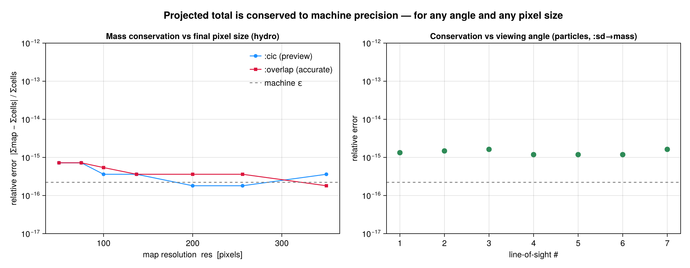

Off-axis Conservation Proof
A projection only changes the viewing geometry of the data — it must not change the physical content. For an extensive quantity (one whose pixel values sum to a physical total, e.g. mass) the sum over the projected map must equal the geometry-independent ground truth
\[\sum_{\text{pixels}} M_{ij} \;=\; \sum_{\text{cells}} m_\text{cell}\]
for every viewing angle and for every output pixel size. This page states why that holds for Mera's off-axis projection and shows the measured errors.
Conservation is a partition-of-unity identity, so all four binning modes (:cic, :ngp, :overlap, :exact) satisfy it equally, to ~10⁻¹⁶. It therefore says nothing about which method is more accurate — i.e. about where the mass lands. The spatial fidelity (and how :overlap differs from the centre-deposit previews) is a separate question, shown in the "How the methods differ" section of the off-axis projection tutorial and verified in test/35_offaxis_accuracy_tests.jl.
Why it is conserved
Every binning mode (:cic, :ngp, :overlap, :exact) is a partition-of-unity deposit. The centre-deposit modes draw from the standard particle-mesh assignment schemes (Hockney & Eastwood, Computer Simulation Using Particles, 1988); the footprint modes (:overlap, :exact) renormalise each cell's per-pixel shares to sum to 1:
- each cell (or particle) distributes its full weight across the pixels of the camera plane, with deposit fractions that sum to exactly 1;
- therefore the total deposited weight is
Σ_cells m_cellregardless of where the cells land; - rotating the camera (
los,theta/phi,:faceon,:edgeon) or changing the pixel grid (res,pxsize) only moves cells between pixels — it never creates or destroys weight.
Cells whose deposit stencil reaches past the map border fold the outside fraction back onto the edge pixel (as the axis-aligned binner also does), so the global sum is preserved to machine precision rather than leaking at the boundary.
For the accurate :overlap mode the same argument holds per sub-point: a cell is split into n³ sub-points each carrying weight/n³, and the sub-point shares again sum to 1. For the analytic :exact mode the cell's per-pixel footprint integrals are renormalised so they sum to the cell volume (= 1 in fractional terms), so the conserved total is again exact by construction. Both footprint modes (:overlap and :exact) are thread-parallel (cells split into contiguous chunks accumulated into thread-local grids, then summed); the conserved total is independent of the thread count.
Measured invariance
The test suite proves this numerically on real RAMSES data in test/34_offaxis_invariance_tests.jl. It projects an extensive quantity over a grid of 7 line-of-sight angles × 5 final-map pixel sizes (including non-power-of-two) × {:cic, :overlap, :exact} and compares the map sum to the ground-truth sum(getvar(obj, q)).
| Quantity (object) | angles × pixel sizes × binning | worst relative error |
|---|---|---|
:mass (hydro) | 7 × 7 × 3 | ~10⁻¹⁵ |
:volume (hydro, :sum) | 7 × 3 | 1.2 × 10⁻¹⁶ |
:sd → mass (particles) | 7 × 7 × 3 | 1.6 × 10⁻¹⁵ |
The errors are at the floating-point round-off level — i.e. the projected total is, for all practical purposes, independent of the viewing angle and of the chosen map resolution.
The plot below shows the actual measured relative error from this sweep. Left: hydro mass conservation versus the final-map pixel count, for both the fast :cic preview and the accurate :overlap deposit — both curves hug the machine-ε line (dashed) across every resolution. Right: particle surface-density → mass conservation across the seven viewing angles — every point sits at ~10⁻¹⁵. Both panels are decades below any level that would matter physically.

# the sweep behind the plot (abbreviated)
using Mera
gas = gethydro(getinfo(100, "spiral_clumps"))
Mtot = sum(getvar(gas, :mass, :Msol))
LOS = [[0,0,1], [1,0,0], [0,1,0], [1,1,1], [1,-2,0.5], [-2,1,3], [0.3,0.4,0.866]]
for res in (50, 75, 100, 137, 200, 256, 350), binning in (:cic, :overlap, :exact)
worst = maximum(abs(sum(projection(gas, :mass, :Msol, los=los, res=res, binning=binning,
verbose=false, show_progress=false).maps[:mass]) - Mtot) / Mtot
for los in LOS)
@assert worst < 1e-9
endThe same test suite also covers off-axis RT photon fields (the volume-weighted photon sum is conserved across angles and pixel sizes) and the gravity interface.
Correct placement, not just a correct total
Conservation alone would be satisfied by a buggy projection that put the right amount of mass in the wrong pixels. So the suite additionally proves that mass is placed at the correct location: the mass-weighted centroid of the projected map equals the analytically rotated 3-D mass centroid Σ(m·r)/Σm (rotated by the camera basis) to better than 1 % of a pixel, for every viewing angle. For intensive quantities, the mass-weighted spatial mean of the map (e.g. ⟨vₓ⟩) reproduces the global mass-weighted mean of the cells to ~10⁻¹⁵ and is identical for all angles. Together these show the off-axis transform is geometrically correct, not merely flux-conserving.
Reproduce it yourself
using Mera
info = getinfo(100, "spiral_clumps")
gas = gethydro(info)
# geometry-independent ground truth
Mtot = sum(getvar(gas, :mass, :Msol))
# sweep angles and final-map pixel sizes; every total must equal Mtot
for los in ([0,0,1], [1,0,0], [1,1,1], [1,-2,0.5], [-2,1,3])
for res in (50, 100, 137, 256) # incl. non-power-of-two
for binning in (:cic, :overlap, :exact)
m = projection(gas, :mass, :Msol, los=los, res=res, binning=binning,
verbose=false, show_progress=false)
relerr = abs(sum(m.maps[:mass]) - Mtot) / Mtot
@assert relerr < 1e-9
end
end
end
println("Off-axis mass conservation verified across all angles and pixel sizes.")Relation to other tools
This combination is the distinguishing property of Mera's off-axis projection:
- like ray-cast off-axis projections (e.g. yt) the accurate
:overlap/:exactmodes are footprint-correct — coarse AMR cells cover the full area of their projected shadow; - the
:exactmode goes further: it integrates the line-of-sight column (chord length through each cube) over every pixel analytically — a box-spline footprint that no mainstream tool computes for off-axis AMR (most resample to a uniform grid or ray-cast); - unlike a ray-cast integration, the deposit is exactly mass-conserving — the projected total matches the data total to machine precision, at any angle and any pixel size, as shown above.